Exhaust System
Diesel Oxydation Catalyst Model Information
Role of subsystem in vehicle
The exhaust system model simulates a fuel converter exhaust aftertreatment system for the vehicle. In the case of an internal combustion engine, it is composed of the exhaust manifold, downpipe, catalytic converter, and muffler. It can be incorporated into various vehicle configurations including, series, parallel, and conventional vehicles. The primary output of the exhaust system model is the tailpipe emissions (HC, CO, NOx, and PM) in g/s, as a function of time. Other outputs include the temperature of various exhaust system components and of the exhaust gas temperature into and out of each system component.
Description of modeling approach
Catalyst conversion efficiencies as a function of temperature are stored in vectors. Additionally, there is a catalyst efficiency adjustment (decrease) made at high exhaust flow rates (face velocities) and an upper “breakthrough” limit in g/s for each emission component. The tailpipe emissions are then the product of the fuel converter out emissions and the total effective catalyst efficiency. Catalyst temperature is calculated using a lumped-capacitance approach. A mass and heat capacity are assigned not only to the major converter components (monolith, exterior shell, and remainder), but also to the manifold and downpipe. Heat transfer correlations are used to estimate the convective heat transfer coefficients from the hot exhaust gas to the components, as well as from the components to ambient. Radiative loss to the ambient is also included. Within the converter, the heat of catalysis is estimated based on the g/s of each emission component (HC, CO, NOx, and PM) being catalyzed. This heat adds to the rate of converter warmup. NOTE: An older approach to estimating the catalyst temperature as a simple exponential curve fit of typical warmup and cooldown versus time has been retained. This old approach can be compared to the current approach by comparing the variable ex_cat_temp_old with ex_cat_temp and emis_old with emis.
Equations used in subsystem
There are many equations encompased in the exhaust system modeling. Additional information on thermal modeling is provided in the section below. In general, the following types of equations are used:
(change in temperature with time)=(net heat flow)/[(mass)*(heat capacity)]
where: (net heat flow) can be:
convective: (heat transfer coef)*(surface area)*(surface-to-fluid temperature difference)
conductive: (thermal conductance)*surface-to-surface temperature difference)
or radiative: (emissivity)*(surface area)*(Steffan-Boltzman constant)*(Th4 – Tc4)
(catalyst efficiency) = (catalyst temperature efficiency) * (catalyst exhaust flow efficiency)
(catalyst efficiency) = max(catalyst efficiency, “breakthrough” limit)
(tailpipe emissions) = (engine out emissions) * [1 – (catalyst efficiency)]
Exhaust aftertreatment thermal model
Figure 1. Top level of catalyst model
The prediction of tailpipe emissions is based on the engine emissions multiplied by the catalyst conversion efficiency. The catalyst conversion efficiency is a function of catalyst temperature. ADVISOR has a detailed and accurate methodology for predicting catalytic converter temperature.
The top level of the exhaust system thermal model is shown in Figure 1. The converter thermal model uses two outputs from the fuel converter as its inputs: the exhaust gas flow rate and engine-out temperature. The exhaust gas loses heat to the exhaust manifold and downpipe prior to reaching the catalytic converter (which in turn lose heat to the engine and ambient). The catalytic converter is modeled via a three-node lumped capacitance model including 1) monoliths, 2) inner steel shell, and 3) outer steel shell. Heat exchange from the gas to the converter nodes, between converter (and pipe) nodes, and from the converter to the ambient was modeled via appropriate advection, conduction, convection, and radiation thermal resistances, as shown in Figure 2 and Table 1.
Figure 2. Thermal network representing the catalyst and associated thermal elements
Table 1. Modes of heat transfer and representative thermal resistances
|
Mode |
Resistance |
Variable definitions |
|
Advection |
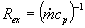
|
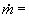mass flow rate, 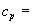heat capacity |
|
Conduction |
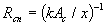
|
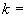thermal conductivity, 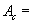cross-sectional area,
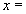representative distance between nodes |
|
Convection |
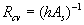
|
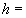convective heat transfer coefficient,
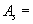surface area |
|
Radiation |
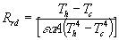
|
emissivity, |
A thermal network diagram is often used to show the flow of thermal energy (heat) through a system approximated with nodes. In such a network, heat flow is analogous to current, and temperature to voltage (Q=D T/R). Note that each lumped capacitance node (represented in Figure 3 with a circle around a dot) has a thermal mass associated with it, analogous to an electrical capacitance with a value of mass*heat capacity, as shown in Figure 2.
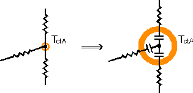
Figure 3. Thermal capacitance at nodes in catalyst’s network
Within the converter, the heat of catalysis, Qct, is estimated based on the mass flow rate (g/s) of each emission component (HC, CO, and NOx) being catalyzed. This heat adds to the rate of converter warm-up. This detailed thermal model of the exhaust aftertreatment system also enables much more flexibility in investigating aftertreatment options. Recently, NREL and Benteler Automotive Corp. used this thermal model as part of ADVISOR to look at the emissions reduction capability of a vacuum-insulated catalytic converter.
* * * * *
Last revised: 8/20/01:tm
{kind=link}